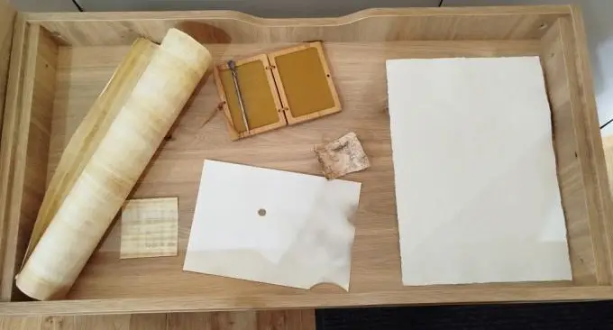

< Уступ
На чым пісалі Біблію? Прылады для пісьменнасці.

1 — папірус;
2 — цэра і стылус;
3 — пергамент;
4 — бераста;
5 — папера ручной працы;
6 — гусінае пяро і атрамант.
Перад вамі прылады для пісьма ў розныя эпохі чалавечай гісторыі ад старажытнасці і да XX ст.